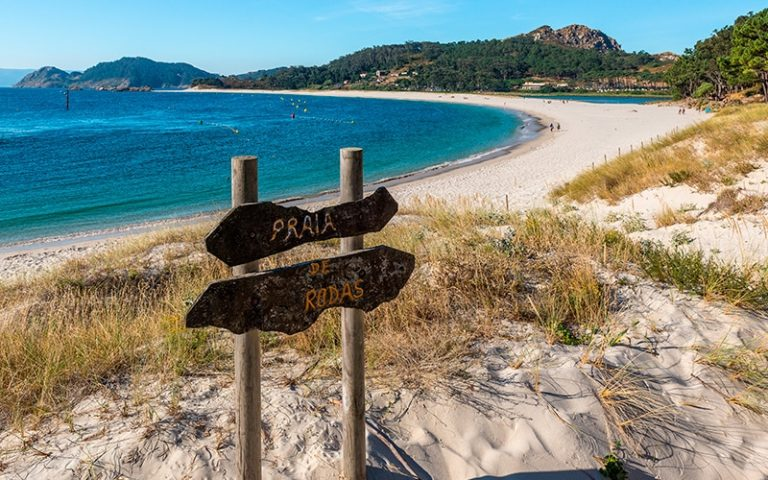

¿Qué hacer en Galicia?
Galicia es una tierra de contrastes, con una gran diversidad de paisajes y una rica herencia cultural. Aquí encontrarás playas de arena blanca, acantilados escarpados, montañas cubiertas de bosques, ríos y valles fértiles, y una costa rocosa y escarpada. Además, Galicia es conocida por su gastronomía, con platos típicos como el pulpo a la gallega, el lacón con grelos, el caldo gallego, el marisco y el pescado fresco.
